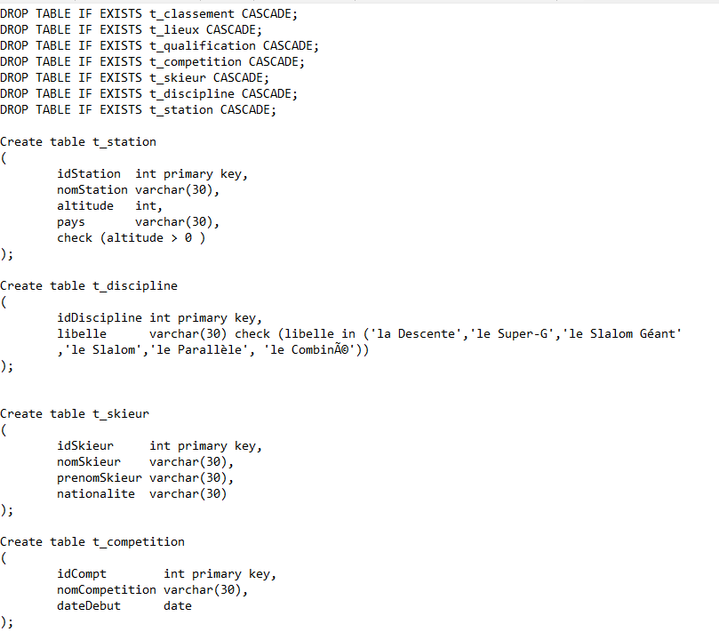
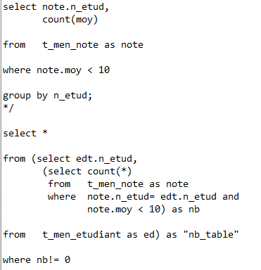
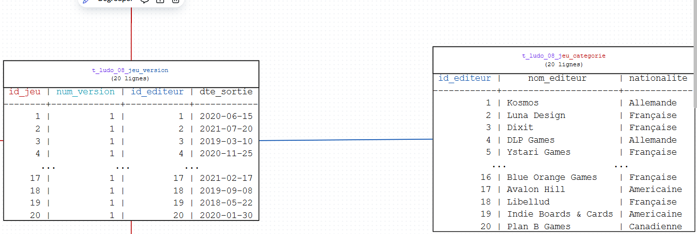
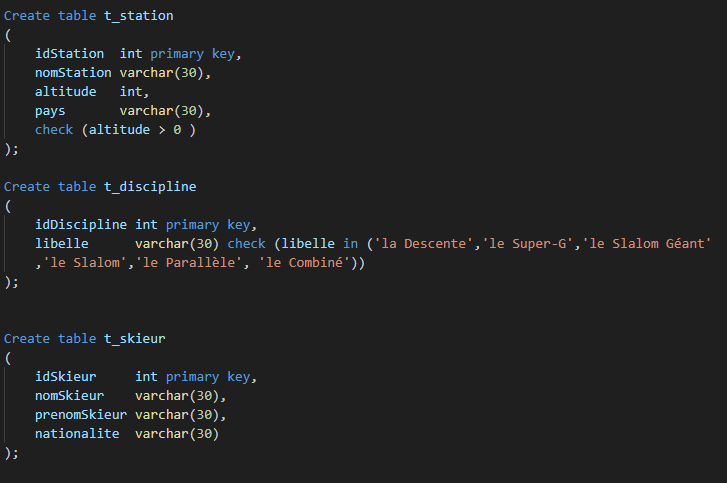

Cette compétence consiste à savoir créer, manipuler, exploiter et stocker des données de manière efficace.
Contexte : Durant cette SAE, nous avons dû créer une base de données, y insérer des données, puis effectuer des requêtes pour vérifier son bon fonctionnement. Nous avons également conçu un schéma relationnel et un diagramme MCD à partir d'un cahier des charges.
Technologie utilisée : SQL
Apprentissages : J'ai appris à concevoir une base de données en respectant les contraintes du cahier des charges, tout en m'assurant de sa cohérence et de son bon fonctionnement.
Contexte : Dans ce projet, nous avons de nouveau conçu une base de données, puis réalisé des requêtes complexes en SQL et en algèbre relationnelle, à partir d’un cahier des charges précis.
Langage utilisé : SQL
Apprentissages : J'ai approfondi mes compétences dans l'insertion de données et la réalisation de requêtes complexes. J’ai également appris à identifier les relations et contraintes à appliquer dès la phase de conception.
Dans les projets SAE 1.04 et d’exploitation de base de données, j’ai appris à insérer, modifier et supprimer des données de manière structurée à l’aide de requêtes SQL, tout en respectant les contraintes du modèle relationnel.

J’ai réalisé des requêtes SQL complexes (jointures, conditions, tris, agrégations) et en algèbre relationnelle pour extraire des informations pertinentes à partir de la base. J’ai aussi veillé à formater et présenter les résultats de manière claire.

À partir d’un cahier des charges fourni, j’ai conçu un MCD (Modèle Conceptuel de Données), un schéma relationnel, puis j’ai créé la base de données en SQL tout en respectant les contraintes fonctionnelles et techniques.
Schéma relationnel :
R Categorie(id_categ, lib_categ) R Jeu(id_jeu, titre, difficulte, age_mini, nb_joueur_mini, nb_joueur_maxi, duree, type_duree) R Adherent(id_adh, nom_adh, prenom_adh, tel_adh, adr_ligne1_adh, [adr_ligne2_adh], adr_cp_adh, adr_ville_adh, [adr_pays_adh]) R Emprunt(id_emprunt, dte_emprunt, dte_retour_prev, [dte_retour_eff], ref_ludo#, id_adh#) R Auteur(id_auteur, nom_auteur, [prenom_auteur], [nationalite]) R Exemplaire(ref_ludo, dte_acquisition, ref_rangement, (id_jeu, num_version)#) R Jeu_version(id_jeu#, num_version, dte_sortie, id_editeur#) R Editeur(id_editeur, nom_editeur, nationalite) R Jeu_Adherent(id_jeu#, id_adh#, note, avis, dta_avis) R Auteur_Jeu_version((id_jeu, num_version)#, id_auteur#, role) R Categorie_Jeu(id_jeu#, id_categ#)

J’ai appliqué des contraintes d’intégrité (clés primaires, clés étrangères, types de données) pour garantir la validité des données, et j’ai effectué des tests pour vérifier la robustesse du modèle.

Je me suis appuyé sur le modèle entité-association (MCD) et le modèle relationnel pour structurer les données de manière logique avant de les implémenter en SQL.